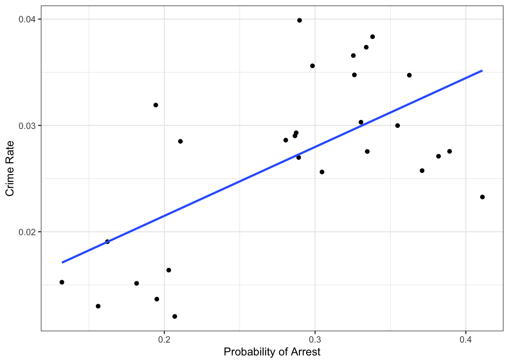
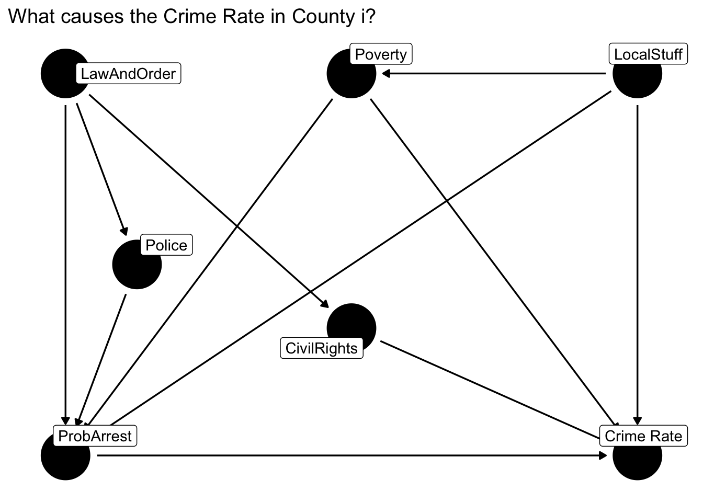
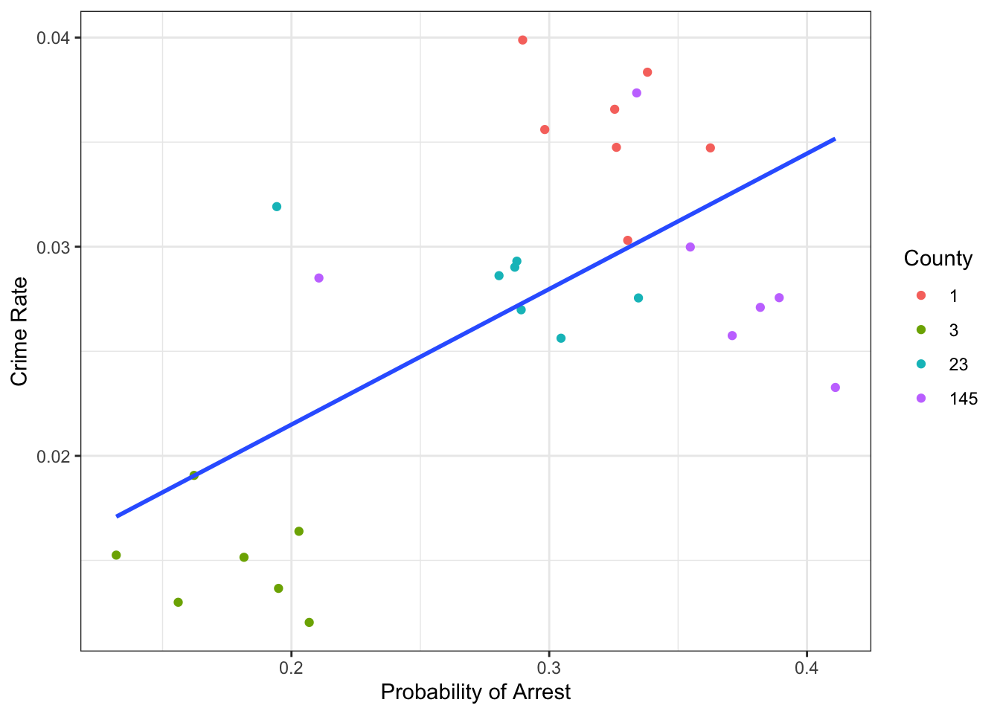
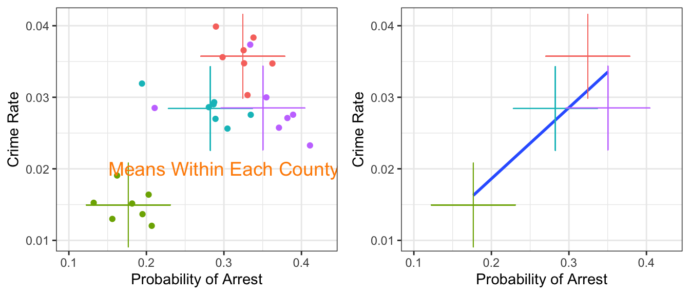
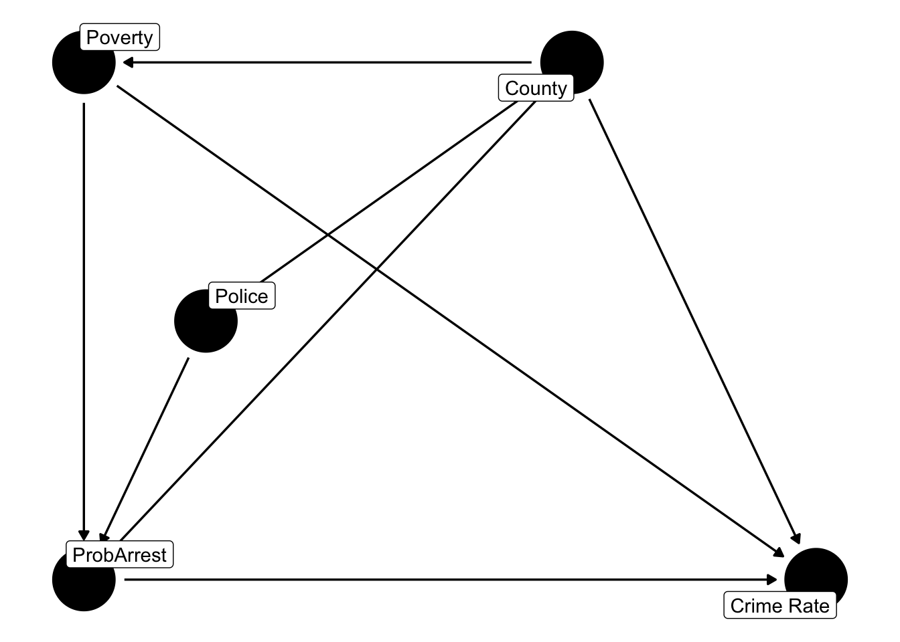
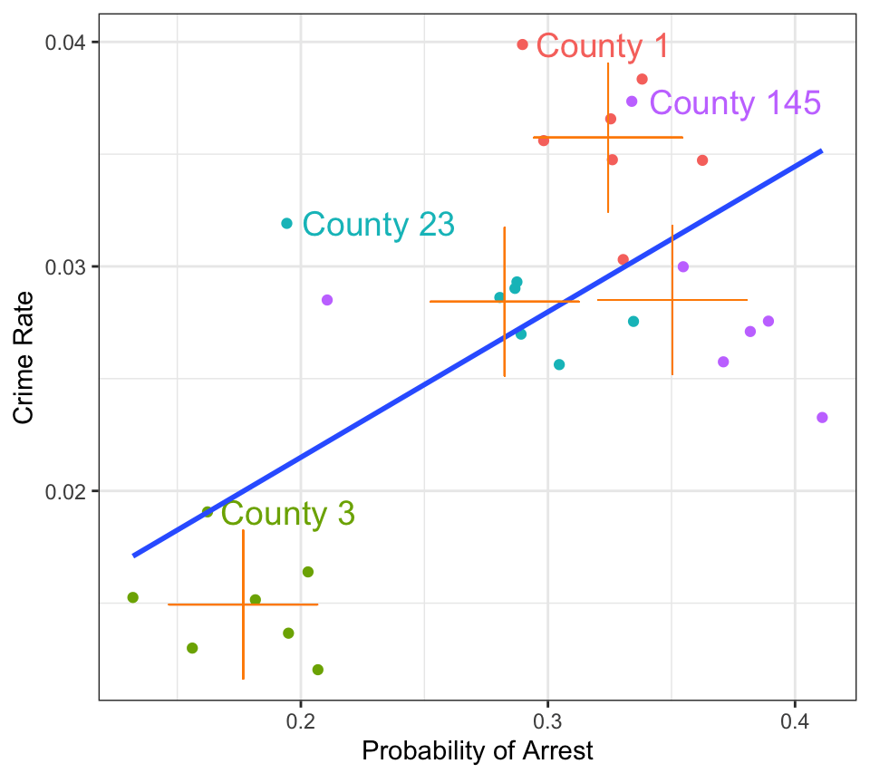

Up until now we have dealt with data that looked like the following, where County is the idendifier for a county, CrimeRate is the number of crimes committed by person, and ProbofArrest is the probability of arrest, given crime committed:
We would have a unit identifier (like County here), and some observables on each unit. Such a dataset is usually called a cross-sectional dataset, providing one single snapshot view about variables from a study population at a single point in time. Each row, in other words, was one observation. Panel data, or longitudinal datasets, on the other hand, also index units over time. In the above dataset, for example, we could record crime rates in each county and in each year:
County
Year
CrimeRate
ProbofArrest
1
81
0.0398849
0.289696
1
82
0.0383449
0.338111
1
83
0.0303048
0.330449
1
84
0.0347259
0.362525
1
85
0.0365730
0.325395
1
86
0.0347524
0.326062
1
87
0.0356036
0.298270
3
81
0.0163921
0.202899
3
82
0.0190651
0.162218
Here each unit i (e.g. county 1) is observed several times. Let’s start by looking at the dataset as a single cross section (i.e. we forget about the t index and treat each observation as independent over time) and investigate the relationship between crime rates and probability of arrest in counties number 1,3,23,145:
css = crime4 %>%filter(county %in%c(1,3,145, 23)) # subset to 4 countiesggplot(css,aes(x = prbarr, y = crmrte)) +geom_point() +geom_smooth(method="lm",se=FALSE) +theme_bw() +labs(x ='Probability of Arrest', y ='Crime Rate')

Figure 10.1: Probability of arrest vs Crime rates in the cross section
We see an upward-sloping regression line, so it seems that the higher the crime rate, the higher the probability of arrest. In particular, we’d get:
such that we’d associate an increase of 10 percentage points in the probability of arrest (prbarr goes from 0.2 to 0.3) with an increase in crime rate from 0.021 to 0.028, or a 33.33 percent increase. Ok, but what does that mean? Literally, it tells us counties with a higher probability of being arrested also have a higher crime rate. So, does it mean that as there is more crime in certain areas, the police become more efficient at arresting criminals, and so the probability of getting arrested on any committed crime goes up? What does police efficiency depend on? Does the poverty level in a county matter for this? The local laws? 🤯 wow, there seem to be too many things left out of this simple picture. It’s impossible to decide whether this estimate makes sense or not like this. A DAG to the rescue!

Figure 10.2: DAG to answer what causes the local crime rate?
In figure Figure 10.2 we’ve written LawAndOrder for how committed local politicians are to law and order politics, and LocalStuff for everything that is unique to a particular county apart from the things we’ve listed. So, at least we can appreciate to full problem now, but it’s still really complicated. Let’s try to think about at which level (i.e. county or time) each of those factors vary:
LocalStuff are things that describe the County, like geography, and other persistent features.
LawAndOrder and how many CivilRights one gets might change a little from year to year, but not very drastically. Let’s assume they are fixed characteristics as well.
Police budget and the Poverty level vary by county and by year: an elected politician has some discretion over police spending (not too much, but still), and poverty varies with the national/global state of the economy.
You will often hear the terms within and between variation in panel data contexts. If we think of our data as classified into groups of i (i.e., counties), the within variation refers to things that change within each group over time: here we said police budgets and poverty levels would change within each group and over time. On the other hand, we said that LocalStuff, LawAndOrder and CivilRights were persistent features of each group, hence they would not vary over time (or within the group) - they would differ only across or between groups. Let’s try to separate those out visually!

That looks intriguing! Let’s add the mean of ProbofArrest and CrimeRate for each of the counties to that plot, in order to show the between county variation:

Simple OLS on the cross section (i.e. not taking into account the panel structure) seems to recover only the between group differences. It fits a line to the group means. Well this considerably simplifies our DAG from above! Let’s collect all group-specific time-invariant features in the factor County - we don’t really care about what they all are, because we can net the group effects out of the data it seems:

Figure 10.3: DAG to answer what causes the local crime rate?
So, controlling for County takes care of all factors which do not vary over time within each unit. Police and Poverty will have a specific County-specific mean value, but there will be variation over time. We will basically be able to compare each county with itself at different points in time.
10.2 Panel Data Estimation with R
We have now seen several instances of problems with simple OLS arising from unobserved variable bias. For example, if the true model read
y_i = \beta_0 + \beta_1 x_i + c_i + u_i
with c_i unobservable and potentially correlated with x_i, we were in trouble because the orthogonality assumption E[u_i+c_i|x_i]\neq 0 (u_i+c_i is the total unobserved component). We have seen such an example where c=A_i and x=s was schooling and we were worried about ability bias. One solution we discussed was to find an IV which is correlated with schooling (quarter of birth) - but not with ability (we thought ability is equally distributed across birthdates). Today we’ll look at solutions when we have more than a single observation for each unit i. To be precise, let’s put down a basic unobserved effects model like this:
The object of interest here is c_i, called the individual fixed effect, unobserved effect or unobserved heterogeneity. The important thing to note is that it is fixed over time (ability A_i for example).
10.2.1 Dummy Variable Regression
The simplest approach is arguably this: we could take the equation literally and estimate a linear model where we include a dummy variable for each i. This is closest to what we said above is controlling for county - that’s exactly what we do here. You can see in Equation 10.1 that each i has basically their own intercept c_i, so this works. In R you achieve this like so:
mod =list()mod$dummy <-lm(crmrte ~ prbarr +factor(county), css) # i is the unit IDbroom::tidy(mod$dummy)
Figure 10.4: Dummy variable regression: parallel lines, one per county
It’s evident that within each county, there is a negative relationship. The dummy variable regression allows for different intercepts (county 1 is be the reference group), and one unique slope coefficient \beta. (you observe that the lines are parallel).
You can see from this by looking at the picture that what the dummies are doing is shifting their line down from the reference group 1.
10.2.2 First Differencing
If we only had T=2 periods, we could just difference both periods, basically leaving us with
\begin{align}
y_{i1} &= \beta_1 x_{i1} + c_i + u_{i1} \\
y_{i2} &= \beta_1 x_{i2} + c_i + u_{i2} \\
& \Rightarrow \\
y_{i1}-y_{i2} &= \beta_1 (x_{i1} - x_{i2}) + c_i-c_i + u_{i1}-u_{i2} \\
\Delta y_{i} &= \beta_1 \Delta x_{i} + \Delta u_{i}
\end{align}
where \Delta means difference over time of and to recover the parameter of interest \beta_1 we would run
lm(deltay ~ deltax, diff_data)
10.2.3 The Within Transformation
In cases with T>2 we need a different approach - this is the most relevant case. One important concept is called the within transformation.1 This is directly related to our discussion from above when we simplified our DAG. So, controlling for group identity and only looking at time variation is what we said - let’s write it down! Here we denote as \bar{x}_i the average over time of i’s x values:
\bar{x}_i = \frac{1}{T} \sum_{t=1}^T x_{it}
With this in hand, the transformation goes like this:
for all variables compute their time-mean for each unit i: \bar{x}_i,\bar{y}_i etc
for each observation, substract that time mean from the actual value and define (x_{it} - \bar{x}_i),(y_{it}-\bar{y}_i)
Finally, regress (x_{it} - \bar{x}_i) on (y_{it}-\bar{y}_i)
This works for our problem with fixed effect c_i because c_i is not time varying by assumption! hence it drops out:
Notice how in table Table 10.1 the estimate for prbarr is positive in the cross-section, like in figure Figure 10.1. If we take care of the unobservered heterogeneity c_i either by including an intercept for each i or by time-demeaning the data, we obtain the same estimate: -0.028 in both cases.
We interpret those within estimates by imagining to look at a single unit i and ask: if the arrest probability in i increases by 10 percentage points (i.e. from 0.2 to 0.3) from year t to t+1, we expect crimes per person to fall from 0.039 to 0.036, or by -7.69 percent (in the reference county number 1).
10.2.4 Using a Package
In real life you will hardly ever perform the within-transformation by yourself and use a package instead. There are several options (fixest if fastest).
Again, we get the same result as with manual demeaning 😅. Let’s finish off with a nice visualisation by Nick C Huntington-Klein’s which illustrates how the within transformation works in this example. If you look back at
you can see that we perform a form of data centering in the within transformation: subtracting their respective time means from all variables means to center all variables! Here’s how this looks (only visible in HTML version online).

Figure 10.5: Animation of a fixed effects panel data estimator: we remove between group variation and concentrate on within group variation only
Different packages implement different flavours of this procedure, this is the main gist↩︎